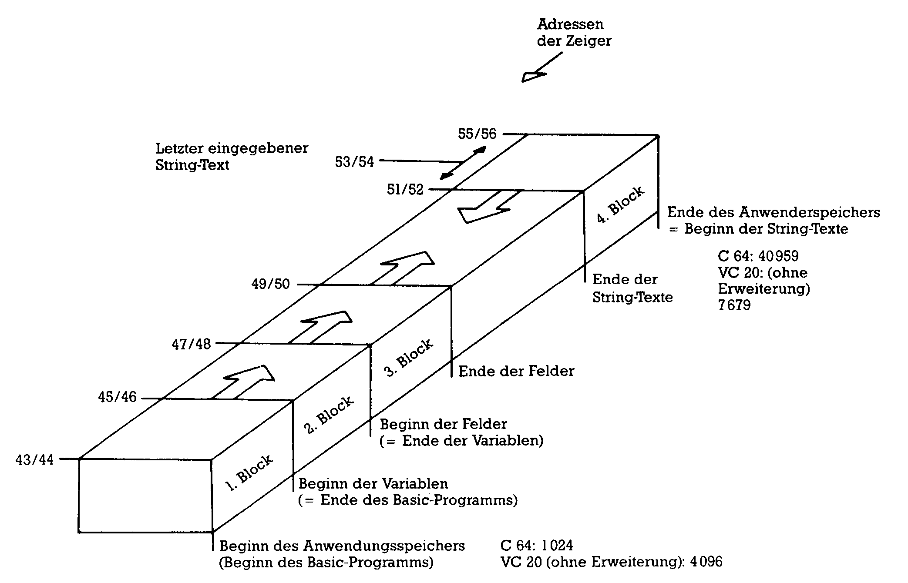

Auf unserer Reise durch den Speicherdschungel unserer beiden Commodore-Computer treffen wir diesmal auf die Speicherstellen 47 bis 56. Sie teilen uns sehr interessante und wichtige Informationen über Variablen-Felder mit.
In der letzten Folge haben wir die Bedeutung der Speicherzellen 45-46 für den Speicherbereich der Ganzzahl-, Gleitkomma- und Stringvariablen behandelt.
Zur »Sichtbarmachung« habe ich Ihnen ein Kochrezept gezeigt, mit dem wir die Variablen, so wie sie im Rechner stehen, auf dem Bildschirm anschauen können. Allerdings galt diese Methode nur für den C 64. Heute liefere ich Ihnen das entsprechende Kochrezept für den VC 20 nach (siehe Texteinschub 1).
Alle interessierten VC 20-Besitzer sollten sich jetzt noch einmal den letzten Teil des Kurses vornehmen und sich die normalen Variablen ansehen.
Heute kommen wir zu weiteren Zeigern im Speicherbereich 0 bis 1024, welche ebenfalls den Variablenspeicher beeinflussen.
Adresse 47-48 ($2F-$30) Zeiger auf die Anfangsadresse des Speicherbereichs für Felder (Arrays)
Dieser Zeiger, in der Low/ High-Byte-Darstellung, gibt dem Basic-Übersetzer (Interpreter) an, ab welcher Speicherzelle die Felder (Arrays) eines Basic-Programms gespeichert sind. Da die Felder direkt nach den normalen Variablen gespeichert werden, zeigt dieser Zeiger natürlich gleichzeitig auf das Ende des Speichers für normale Variablen.
Durch POKEn einer Adresse in die Speicherzellen 47-48 kann der Speicherbereich am Anfang eines Programms beinahe beliebig verschoben werden, beinahe deswegen, weil die Verschiebung im Zusammenhang mit den anderen Bereichen (siehe Bild 1) einen Sinn haben muß. Im übrigen gilt für diesen Zeiger dasselbe, was schon für den Zeiger in 45-46 gesagt worden ist. Die Darstellung der Feld-Variablen selbst kann mit den genannten Methoden angesehen werden, ihre Erklärung finden Sie im Texteinschub 2 und 3.

Bild 1. Eine schematische Aufteilung des Speichers des C 64/VC 20
Wie aus den Erklärungen hervorgeht, wird bei Feldern mit Zeichenketten (Strings) in dem von Zeiger 47-48 bezeichneten Speicherbereich nur die Definition beziehungsweise die Dimensionierung gespeichert. Die eigentlichen Zeichenketten stehen wie bei den normalen Variablen im 4. Block, vom Speicherende rückwärts angeordnet.
Adresse 49-50 ($31-$32) Zeiger auf die Endadresse (+1) des Speicherbereichs für Felder (Arrays)
Der Inhalt dieser Speicherzellen zeigt auf die Adresse, wo der Speicherbereich für Felder aufhört. Wie aus Bild 1 hervorgeht, werden die Zeichenketten vom Ende des verfügbaren RAM-Speichers rückwärts abgespeichert. Man kann also auch sagen, daß der Zeiger in 49-50 die letzte mögliche Adresse für Zeichenketten angibt. Wenn in einem Programm neue Variablen definiert werden, rutscht diese Adresse weiter nach oben und nähert sich dem Ende der Zeichenketten, die durch den Zeiger in 51-52 angegeben wird.
Wenn sich die Speicherbereiche der Felder und Zeichenketten berühren, bleibt der Computer stehen und führt die »Garbage Collection« (Müllabfuhr) durch — ein Prozeß, in dem nicht mehr gebrauchte Zeichenketten entfernt und der Zeichenketten-Speicher reduziert wird. Ist danach immer noch kein Platz, wird OUT OF MEMORY gegeben.
Der Befehl FRE löst immer eine solche Garbage Collection aus und gibt dann die Differenz zwischen den Adressen in den Zeigern 49-50 und 51-52 als verbleibenden noch verfügbaren Speicherbereich aus.
Adresse 51-52 ($33-$34) Zeiger auf die untere Grenze des Speicherbereichs für den Text der Zeichenketten-Variablen
Der Inhalt dieser Speicherzellen zeigt in Low/High-Byte-Darstellung auf dasjeweilige untere Ende (siehe Bild 1) des Textspeichers von Zeichenketten, er bezeichnet aber zugleich auch das obere Ende des frei verfügbaren RAM-Bereichs. Das entsteht dadurch, daß der Text der Zeichenketten vom Ende des RAM-Bereichs nach unten abgespeichert wird. In Bild 1 ist das durch den Pfeil dargestellt.
Beim Einschalten des Computers und nach einem RESET wird dieser Zeiger auf das oberste Ende des RAM-Bereichs gesetzt. Beim C 64 ist das 40960 ($A000). Beim VC 20 hängt es von den eingesetzten Speichererweiterungen ab, ohne Erweiterung ist die Adresse 7680 ($1E00).
Der Befehl CLR setzt den Zeiger auf die Adresse, welche durch den Zeiger in den Speicherzellen 55-56 als das Ende des Basic-Speichers angegeben wird. Wozu das dient, erkläre ich Ihnen bei der Beschreibung dieses Zeigers weiter unten.
Adresse 53-54 ($35-$36) Zeiger auf die Adresse der zuletzt eingegebenen Zeichenkette
In diesen Speicherplätzen steht die Adresse (im 4. Block, siehe Bild 1) der Zeichenkette, die als letzte von Routinen (Programme, Direkteingabe) zur String-Manipulation abgespeichert worden ist. Mit dem folgenden kleinen Programm können Sie das genau sehen:
Zeile 10 druckt uns zuerst (links) den Zeiger auf die zuletzt eingegebene Zeichenkette aus, Zeile 20 rechts daneben den Zeiger auf die untere Speichergrenze der Zeichenketten. Zeile 30 fordert zur Eingabe einer Zeichenkette auf.
Wenn Sie bei frisch eingeschaltetem Computer das Programm starten, sehen Sie eine 0 (= vorher noch kein String eingeben) und daneben die Adresse dez. 40960 (C 64) beziehungsweise dez. 7680 (VC 20 ohne Erweiterung). Wenn Sie auf das Fragezeichen des INPUT hin zum Beispiel ein A eintippen, erhalten Sie links den vorigen Wert von rechts und rechts jetzt eine um 1 kleinere Zahl. Eine weitere Eingabe von zum Beispiel XXXXX schiebt die alte rechte Zahl nach links und die neue wird um die Anzahl der Zeichen, also 5, verringert.
Adresse 55-56 ($37-$38) Zeiger auf das Ende des für Basic-Programme verfügbaren Speichers
Dieser Zeiger, in der Low/ High-Byte-Darstellung, gibt dem Basic-Übersetzer an, welches die höchste von Basic verwendbare Speicheradresse ist. Wie aus Bild 1 ersichtlich ist, ist diese Adresse zugleich der Anfang der als Variable abgespeicherten Zeichenkette (Strings).
Normalerweise ist diese Adresse fest vorgegeben. Die folgende Tabelle gibt darüber Auskunft:
Ende des Programmspeichers
Adresse
Zeiger in 55 56
C64
40960
0160
VC 20 (Grundv.)
7680
030
VC 20 (+3K)
7680
030
VC 20 (+8K)
16384
064
VC 20 (+16K)
24576
096
VC 20 (+24K)
32768
0128
Beim Einschalten des Computers überprüft das Betriebssystem den gesamten RAM-Speicher, bis es zur ersten ROM-Speicherzelle kommt, setzt den Zeiger in 55-56 auf diese Adresse und druckt den bekannten Kopf mit der verfügbaren Speicherangabe auf den Bildschirm.
Normalerweise wird dieser Zeiger nicht geändert.
Es gibt aber zwei Gelegenheiten, bei denen eine Änderung dieses Zeigers sinnvoll beziehungsweise notwendig ist.
Anwendung 1:
Es kommt oft vor, daß der gesamte Speicher nicht ausschließlich für Basic benötigt wird, sondern daß ein freier Speicherbereich geschaffen wird, um zum Beispiel Maschinenprogramme, selbst definierte Zeichen oder hochaufgelöste Grafik unterzubringen, die aber nicht vom Basic-Programm überschrieben werden können.
Bei der Besprechung der Zeiger in 43-44 haben wir das auch schon gemacht, allerdings durch »Hochschieben« des Speicheranfangs. Mit dem Zeiger in 55-56 erreichen wir denselben Effekt, diesmal durch »Hinunterdrücken« des Speicherendes. Gegenüber den vier Schritten beim Hochschieben ist das Hinunterdrücken einfacher. Mit dem Befehl:
POKE 56,PEEK(56)-1:CLR
schieben wir das Speicherende um 256 Byte nach unten, egal für welchen Computer und welche Speichererweiterung. Mit —2 verschiebt sich das Ende um 512, mit —4 um 1024 Byte (also 1 KByte) nach unten. Wenn Sie eine feinere Verschiebung als Vielfache von 256 benötigen, kommen Sie mit dem High-Byte in 56 allein nicht aus, sondern Sie müssen auch einen entsprechenden Wert in 55 hineinPOKEn.
Der Befehl CLR ist absolut notwendig, denn er setzt den Zeiger der Zellen 51-52 (siehe dort), das heißt das untere Ende des Speicherbereichs für Zeichenketten auf dieselbe Adresse wie Zeiger 55-56. Dadurch wird erzwungen, daß die Zeichenkette sozusagen als Ausgangslage unterhalb des heruntergedrückten Speicherendes abgelegt werden.
Anwendung 2:
Über den User-Port (Steckerleiste an der Rückseite, neben dem Datasetten-Anschluß) können VC 20 und C 64 mit anderen Geräten verbunden werden. Der Datentransfer über diese Verbindung — sie heißt RS232-Schnittstelle — muß allerdings programmiert werden. Diese RS232-Schnittstelle hat die Gerätenummer 2 (so wie der Drucker Nummer 4 und das Diskettengerät die Nummer 8 hat).
Wenn nun ein Gerät Nummer 2 mit einem OPEN-Befehl angewählt wird, wird automatisch der Zeiger in 55-56 und der Zeiger in 643 um 512 Bytes heruntergedrückt, um je einen Eingangsund Ausgangspufferspeicher zu erzeugen. Da der Inhalt dieser Pufferspeicher alle Variable in diesen 512 Bytes überschreiben würde, wird auch der CLR-Befehl automatisch gegeben.
Es gilt daher als Vorschrift, daß bei RS232-Verbindungen zuerst der Datenkanal durch OPEN eröffnet werden muß, bevor Variable, Felder und Zeichenketten definiert werden.
Dieser Zeiger beschließt die Gruppe der Speicherzeiger. Das nächste Mal machen wir ab Adresse 57 weiter.